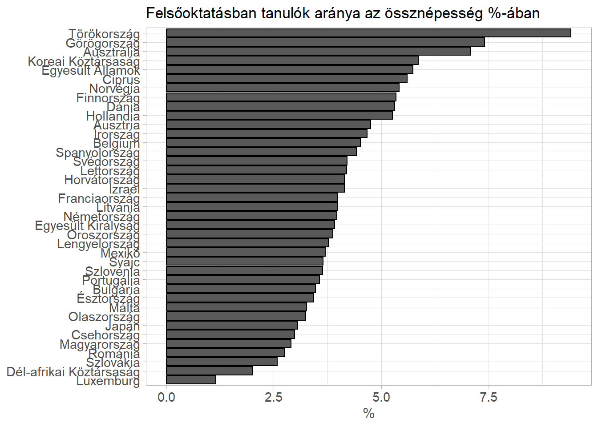
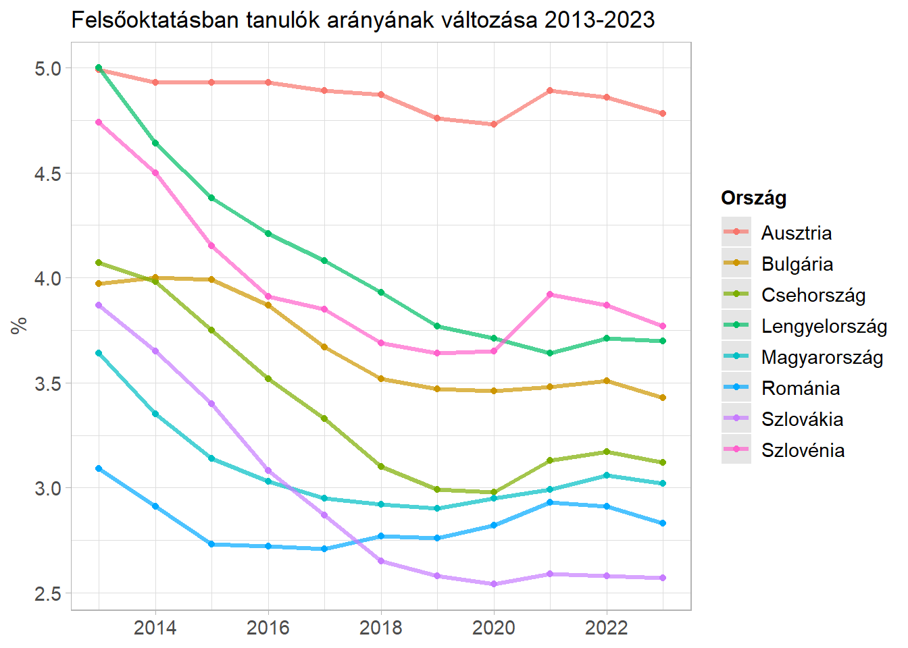
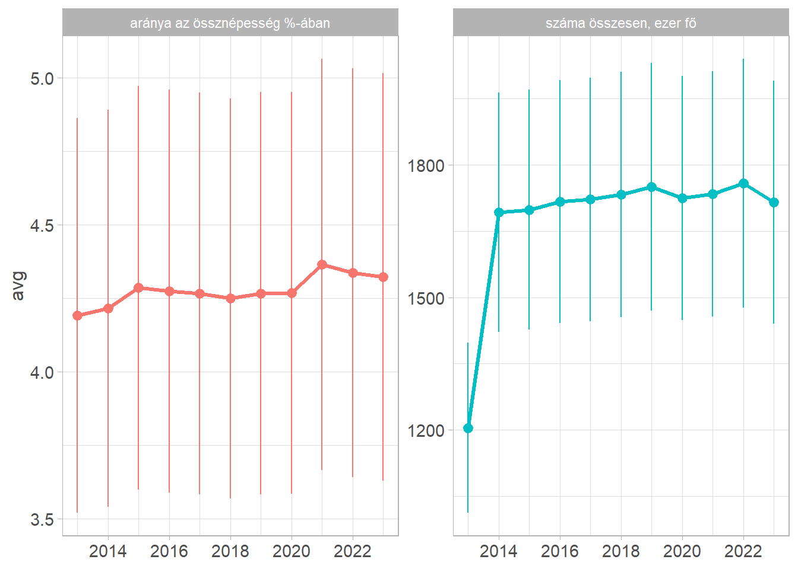
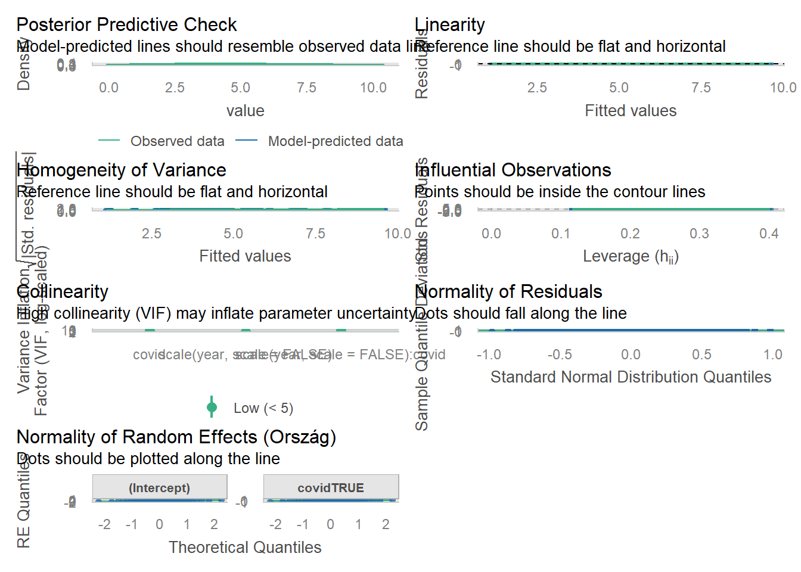

library(tidyverse)
library(rvest)
library(lmerTest)
library(sjPlot)
library(performance)
set_theme(theme_light())Higher education across countries
Scraping data from KSH homepage
he_raw <-
read_html("https://www.ksh.hu/stadat_files/okt/hu/okt0044.html") |>
html_table(header = FALSE, na.strings = "..") |>
_[[1]]
he_names <- paste0(he_raw[2,], "_", he_raw[3,])
he_wide <-
he_raw |>
slice(-c(1:3)) |>
set_names(he_names) |>
rename(Ország = Ország_Ország) |>
mutate(across(-Ország, ~str_remove_all(., " ") |>
str_replace(",", ".") |>
parse_number()
))
he_long <-
he_wide |>
pivot_longer(-Ország,
names_to = c("quantity", "year"),
names_sep = "_"
) |>
mutate(year = as.numeric(year)) |>
mutate(covid = case_when(year < 2020 | year > 2022 ~ FALSE,
TRUE ~ TRUE))Plotting the proportion of higher education students across countries
he_long |>
filter(quantity == "aránya az össznépesség %-ában",
year == 2019) |>
mutate(Ország = fct_reorder(Ország, value)) |>
ggplot() +
aes(y = Ország, x = value) +
geom_col() +
labs(title = "Felsőoktatásban tanulók aránya az össznépesség %-ában",
x = "%",
y = NULL)
Plotting trends over time for selected countries
he_long |>
filter(Ország %in% c("Szlovákia", "Románia", "Ausztria", "Szlovénia", "Bulgária", "Csehország", "Lengyelország", "Magyarország"),
quantity == "aránya az össznépesség %-ában",
) |>
ggplot() +
aes(x = year, y = value, color = Ország, group = Ország) +
geom_point() +
geom_line(linewidth = 1.1, alpha = .7) +
scale_x_continuous(breaks = scales::pretty_breaks()) +
labs(title = "Felsőoktatásban tanulók arányának változása 2013-2023",
x = NULL,
y = "%")
Plotting average trends over time for all countries
he_long |>
group_by(year, quantity) |>
summarise(avg = mean(value, na.rm = TRUE),
sd = mean(value, na.rm = TRUE),
se = sd/sqrt(n())
) |>
ggplot() +
aes(x = year, y = avg, ymin = avg - se, ymax = avg + se,
color = quantity) +
geom_line(linewidth = 1.1, show.legend = FALSE) +
geom_pointrange(show.legend = FALSE) +
facet_wrap(~quantity, scales ="free_y") +
scale_x_continuous(breaks = scales::pretty_breaks()) +
labs(x = NULL)`summarise()` has grouped output by 'year'. You can override using the
`.groups` argument.
Statistical analysis: t-test
he_long |>
filter(quantity == "aránya az össznépesség %-ában") |>
group_by(Ország, covid) |>
summarise(avg = mean(value, na.rm = TRUE)) |>
t.test(avg ~ covid, data = _)`summarise()` has grouped output by 'Ország'. You can override using the
`.groups` argument.
`summarise()` has grouped output by 'Ország'. You can override using the
`.groups` argument.
Welch Two Sample t-test
data: avg by covid
t = -0.16799, df = 74.646, p-value = 0.867
alternative hypothesis: true difference in means between group FALSE and group TRUE is not equal to 0
95 percent confidence interval:
-0.7140631 0.6030069
sample estimates:
mean in group FALSE mean in group TRUE
4.277891 4.333419 Statistical analysis: linear mixed-effects model
covid_lmer <-
he_long |>
filter(quantity == "aránya az össznépesség %-ában") |>
lmer(value ~ scale(year, scale = FALSE) * covid + (covid|Ország), data = _)
tab_model(covid_lmer)| value | |||
|---|---|---|---|
| Predictors | Estimates | CI | p |
| (Intercept) | 4.27 | 3.85 – 4.70 | <0.001 |
| year | -0.00 | -0.02 – 0.01 | 0.629 |
| covidTRUE | -0.09 | -0.38 – 0.21 | 0.561 |
| year × covidTRUE | 0.05 | -0.03 – 0.13 | 0.205 |
| Random Effects | |||
| σ2 | 0.13 | ||
| τ00 Ország | 1.82 | ||
| τ11 Ország.covidTRUE | 0.23 | ||
| ρ01 Ország | 0.25 | ||
| ICC | 0.94 | ||
| N Ország | 39 | ||
| Observations | 422 | ||
| Marginal R2 / Conditional R2 | 0.001 / 0.940 | ||
check_model(covid_lmer)